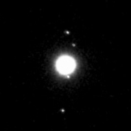
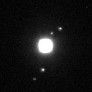
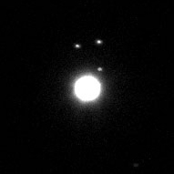

← Images archive
Uranus
Images take of Uranus and its major satellites from 25th October to 2nd November 2002.
The major moons of Uranus captured over several nights. From top to bottom in the first image are Titania, Umbriel, Ariel and Oberon.
25th Oct. 2002
29th Oct. 2002
2nd Nov. 2002
Telescope + Camera: 0.254-m SCT + ST237-A at F/3.75 Bin 1x1





